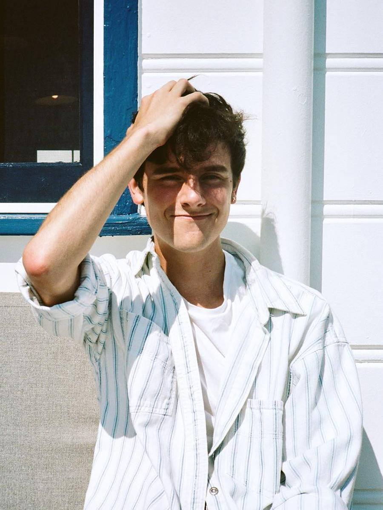

Connor Joel Franta (born September 12, 1992) is an American YouTuber, entrepreneur, entertainer,
and writer. As of September 2018, his self-named main channel on YouTube has over 5.5 million
subscribers. Franta was formerly a member of YouTube group Our Second Life (stylized Our2ndLife
and O2L) under the Fullscreen Network, but is now an independent member of the Big Frame
network, managed by Andrew Graham.Franta has recently become involved in various
entrepreneurial enterprises, including a clothing line, music curation, as well as
a coffee and lifestyle brand named Common Culture. His debut book, a memoir titled A
Work in Progress, was released on April 21, 2015. In July 2015, details of Heard Well, a
record label Franta co-founded, were announced.
Connor Joel Franta was born in Wisconsin, to Peter and Cheryl Franta, a physician and homemaker,
respectively. Shortly after his birth, his family moved to La Crescent, Minnesota. He, his older
brother Dustin, older sister Nicola, and younger brother Brandon were raised as Roman Catholics. Franta
attended St. Peter's Catholic School, Hokah, Minnesota, from elementary school through 8th grade.
As a child, he was overweight, leading his mother to sign him up for a YMCA swimming team. He ran cross
country while attending La Crescent High School, where he graduated in 2011. He studied business at
the Roman Catholic College of Saint Benedict and Saint John's University (Collegeville, Minnesota). In
his sophomore year, he added an arts minor, with an emphasis on films.
Subscribers:
5.36 MVideos:
365Location:
United Statesinstagram:
@connorfranta Twitter:
@connorfranta